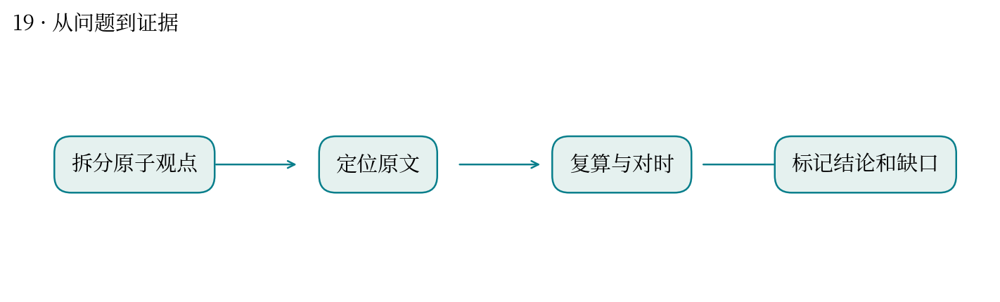
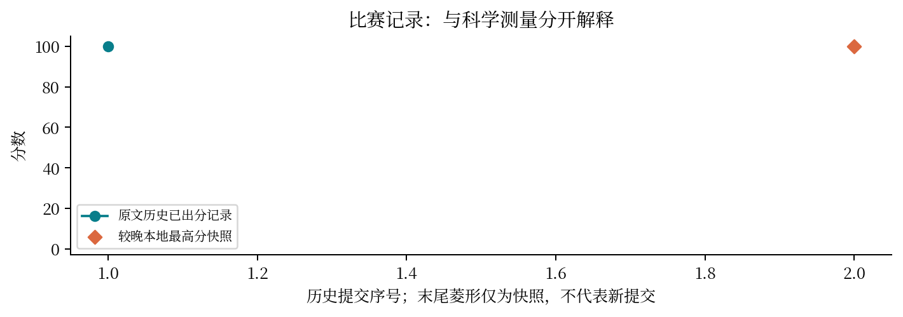

一句话有一半正确时，该怎样做证据审计？
最高分快照：100.0 · 2026-10-12T01:11:24+08:00
一个复合观点可能混合多个事实。审计要先拆成原子命题，再区分“被反证”和“证据尚不足”。
针对封闭库的 20 条观点定位原文，拆分复合段落，检查分层计算与时间截点，并输出可追溯证据。
历史提交 51672 为 100 分。价值在于让每个判断能回到证据，而非只给一张真假标签表。
未找到支持不等于已证伪；分母和研究时间范围不同可能制造表面冲突。
与你做论文证据整理和教育测评效度审查直接相关：结论、证据和推理之间需要明确连接。
满分是本次封闭库任务的评审结果，不能外推为开放领域证据审计零错误。


| attempt | 提交时间 | 分数 | 状态 |
|---|---|---|---|
| 51672 | 10-10 23:24:44 | 100.0 | 已出分 |
源文件 SHA256 见 证据清单；用 scripts/build.py 重建图表。